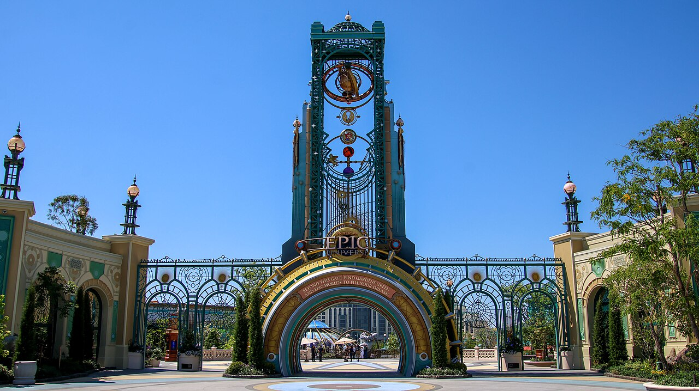
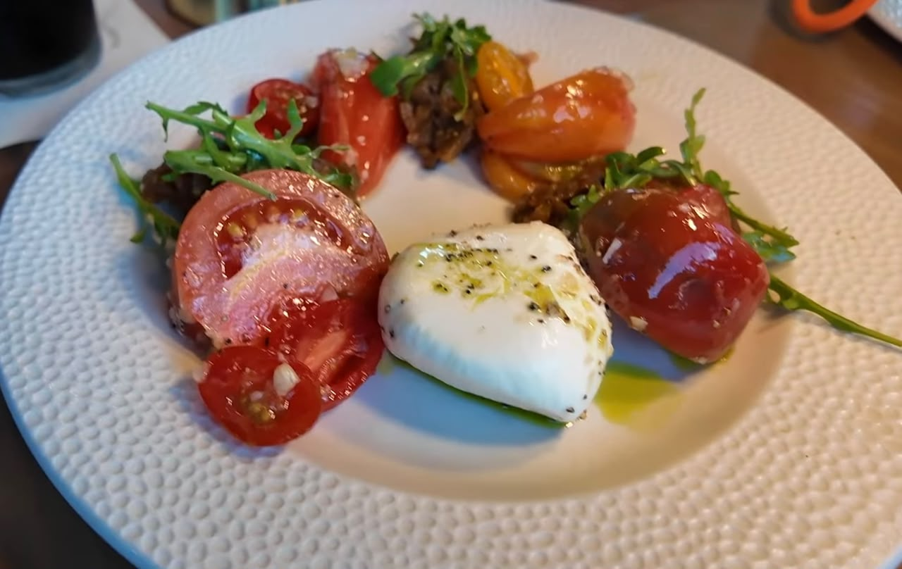
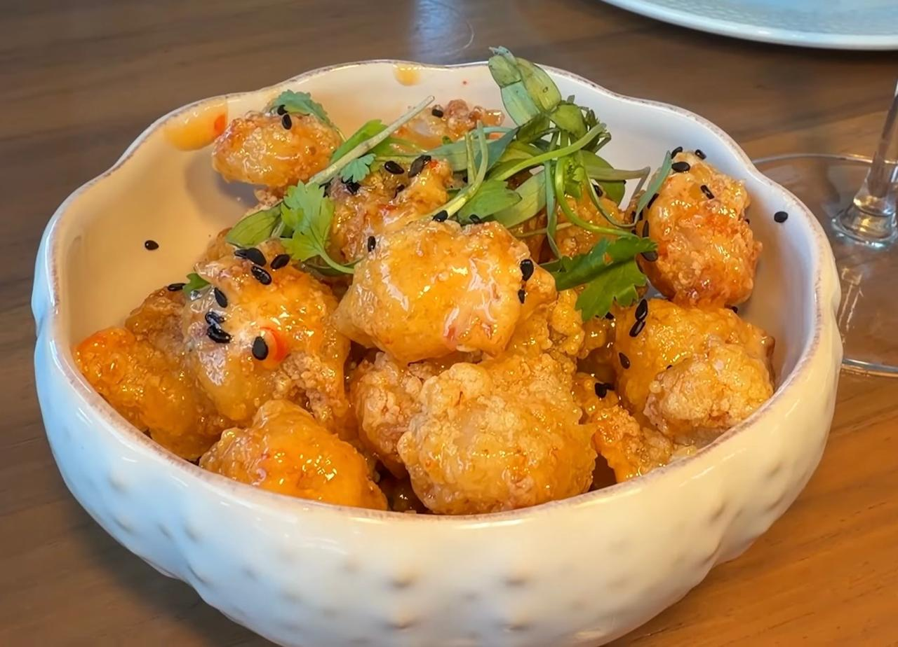
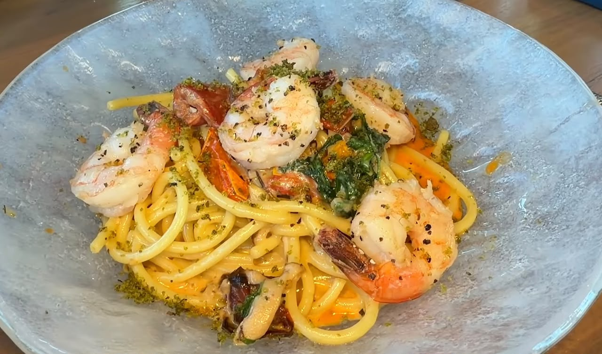
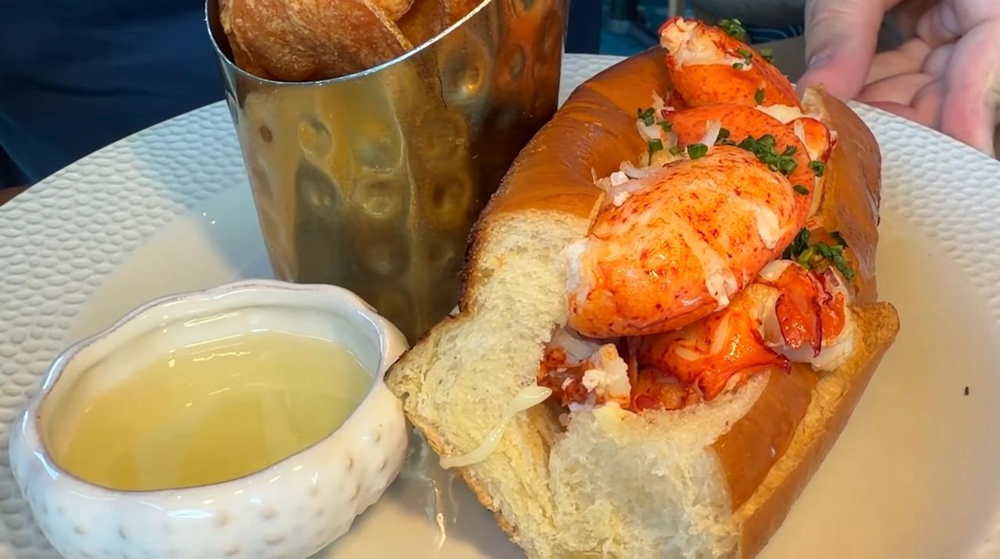
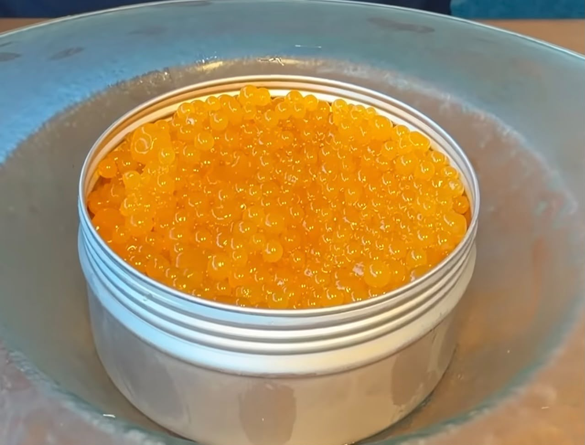
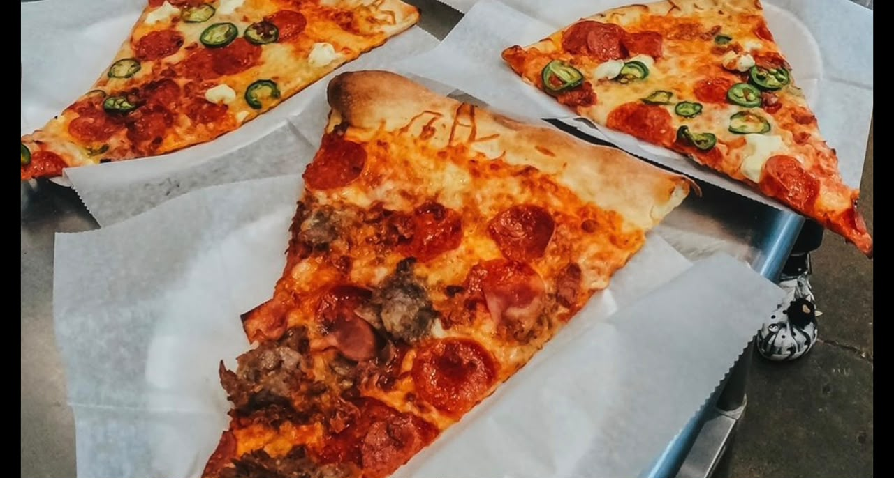

Melhores Comidas do Epic Universe: O Que Comer em Cada Área do Parque

O Epic Universe, parque mais novo da Universal Orlando, aposta em um cardápio autoral para cada área temática, bem diferente do combo hambúrguer, batata e refrigerante padrão de parque. Reunimos o que provamos (e recomendamos) em cada canto do parque para ajudar a planejar onde comer no seu dia de visita.
Ministério da Magia (área da França, mundo de Harry Potter)
Na área inspirada na França do mundo bruxo, dois destaques líquidos: um drink de ameixa, sem álcool, por US$ 6,91, refrescante e que lembra mais pêssego do que ameixa. E a clássica cerveja amanteigada (Butterbeer) numa versão repaginada, gelada ou frozen, que lembra o sabor de refrigerante de guaraná com sorvete de creme, e que só existe no Epic Universe, por US$ 10,11.
Restaurante Atlantic: alta gastronomia com frutos do mar
Para quem quer fugir da comida de parque e sentar para uma refeição mais elaborada, o Atlantic é a aposta: um restaurante de frutos do mar com pegada de alta gastronomia.
Entradas: a burrata com tomates (US$ 19) é bem cremosa e bem temperada, um dos pontos altos da experiência. Também vale o camarão com molho sweet chilli, gergelim e coentro, crocante e caramelizado.


Drink: o Nova Lights, com limoncello e vodka, é leve e gostoso para quem quer uma bebida alcoólica sem exagero.
Pratos principais: o Bucatini all'Arrabbiata com camarão sai por US$ 34. Já o lobster roll vem com pedaços da pata da lagosta, acompanhado de manteiga derretida, servido num pão tostado.


Sobremesas: a panna cotta de piña colada com crocante de coco é bem refrescante, ótima pedida num dia de calor. Tem também o mousse de chocolate com caviar de maracujá, servido numa latinha, com biscoito por baixo, para quem prefere algo mais intenso.

Super Nintendo World: a área do Mario
No mundo dos irmãos Mario, a experiência gastronômica também é temática. A bebida de banana vem numa caneca souvenir, com refrigerante de abacaxi na base e sorvete de banana com abacaxi por cima, por US$ 18,99 (valor já com a caneca).
Para comer, o calzone do Yoshi (molho de tomate, mussarela e pepperoni) lembra bastante uma pizza americana. O smoothie de maçã e melão do Yoshi é bem doce e vale pedir para dividir. No restaurante temático do Mario (que não é muito barato) tem ainda o Mario Burger, um pão de alho em formato de cogumelo e uma tigela de pizza também em formato de cogumelo, como se fosse uma pizza desconstruída, tudo bem no clima do jogo.
Cosmos Pizza
Uma pizza no estilo americano que serve bem duas pessoas, boa opção rápida para quem quer economizar tempo sem abrir mão de comer bem.

Split Fire Grill: o item mais vendido do parque
Point que funciona por pedido via aplicativo do parque, ideal para não perder tempo na fila. O grande destaque é o mac and cheese servido dentro de um pão de alho: já é a comida mais vendida do parque, com mais de meio bilhão de unidades vendidas. O pão é bem macio e o tempero do mac and cheese é suave, sem exagerar no sal.
Para quem busca uma opção mais leve, o Hiccup Salmon Bowl (US$ 18,99), com salmão, vinagrete de rabanete, tomate confit e multigrão, é um ótimo equilíbrio no meio de tanta comida mais pesada.
Preços e disponibilidade de pratos podem mudar sem aviso prévio. Confirme no local ou no app oficial da Universal Orlando antes da sua visita.
Vai visitar o Epic Universe e quer montar o roteiro certo entre as áreas e os restaurantes? A gente ajuda a planejar sua viagem sem perder tempo (nem comida boa).
Falar no WhatsApp